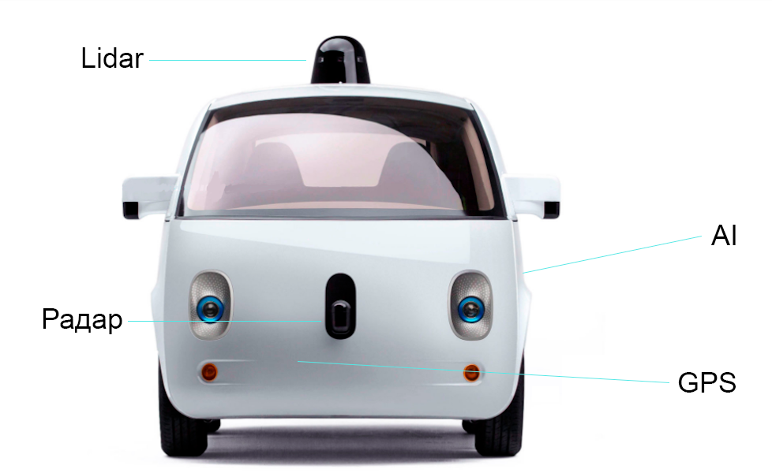
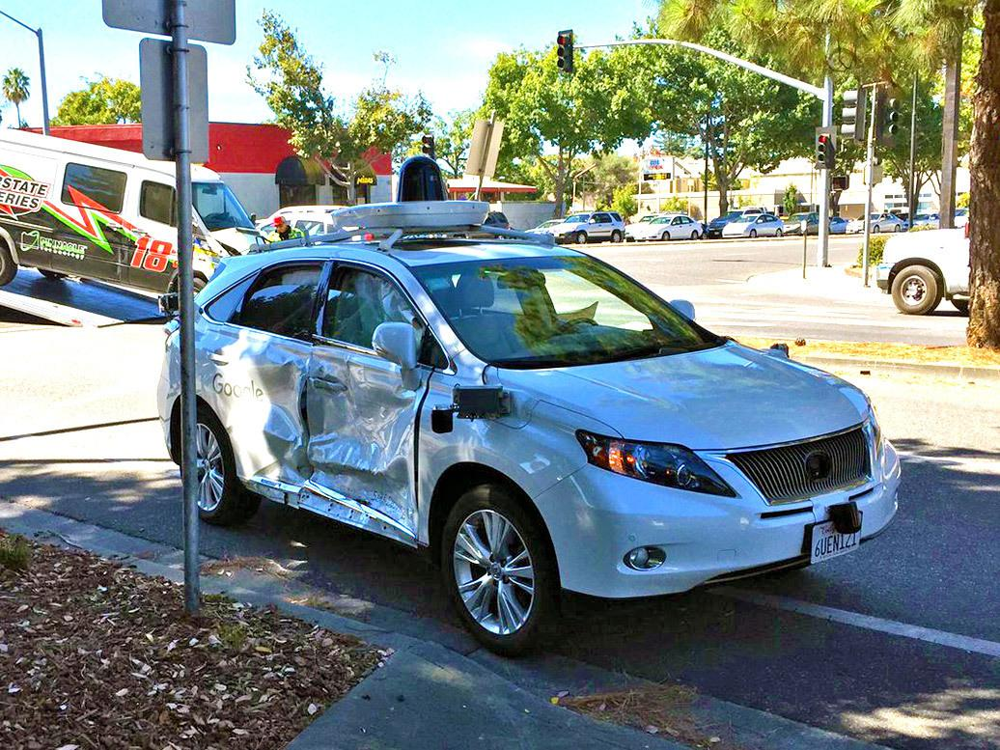

| Home | Yandex | Apple |
У новых автомобилей Google минимум датчиков: всего 1 Lidar (он расположен на крыше автомобиля), 1 радар (на капоте), AI (в багажнике) и GPS (в капоте).
Разработка беспилотника Google длилась почти 4 года. Его разрабатывало секретное научно-исследовательское отделение Google X. Дальность сенсоров - 2 футбольных поля. В салоне находятся всего лишь 2 сидения. Вселоне, помимо сидений, располагаются: места для вещей, ремни безопасности и экран. Но Google, на всякий случай, добавили в салон две кнопки: "Go" и "Stop". Однако, беспилотник не может разогнаться выше 40 км/ч из-за безопасности на дороге. А так, беспилотный автомобиль Google способен развивать скоргость да 160 км/ч.
В ДТП пострадало 4 человека. Беспилотник на основе Lexus RX ехал со скорость 24 км/ч, подъезжал к перекрестку. Автомобиль перед ним вперед не поехал, потому что на другом конце перекрестка образовалась пробка и автомобиль создал бы проблему для поперечного движения. За этим автомобилем остановился следующий, а за ним уже и беспилотник. Но водитель автомобиля за беспилотником не успел среагировать и на скорости 27 км/ч без использования тормозов врезался в беспилотник.
Сейчас беспилотники Google можно встретить только в США, в Вашингтоне